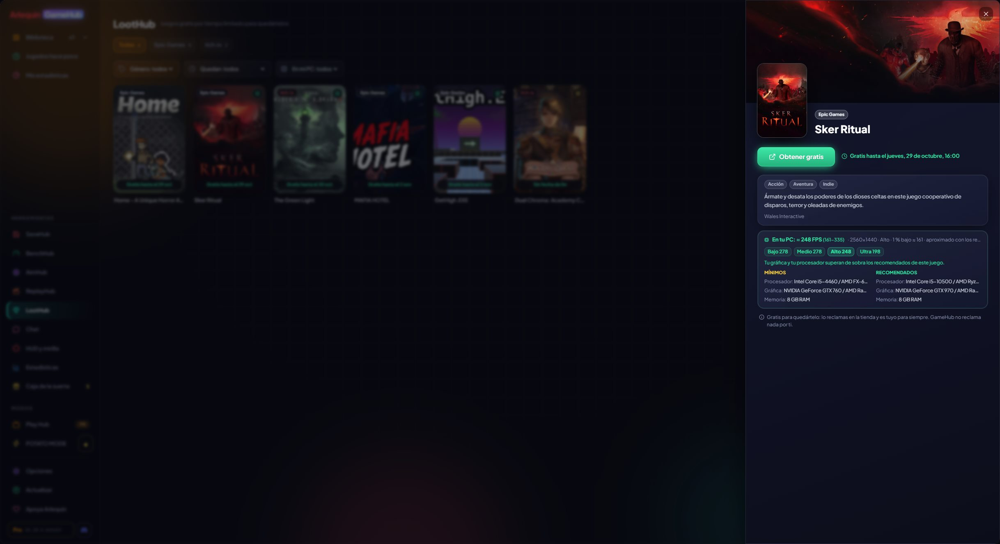

💎
LootHub: 평생 소장하는 무료 게임
스토어들이 한정 기간 동안 무료로 나눠 주는 게임을 한곳에 모아, 새 게임이 나오면 알려 줍니다.
LootHub는 Epic, Steam, GOG, itch.io, Ubisoft, EA, Prime Gaming이 한정 기간 동안 무료로 나눠 주는 게임을 모아 줍니다. 제때 받으면 평생 내 것이 됩니다(무료 플레이 게임과 체험판은 제외). 목록은 매일 갱신되며 인터넷이 없어도 볼 수 있습니다.
스토어별 탭이 있고 장르, 남은 일수, “내 PC에서 돌아감”으로 필터링할 수 있습니다. 각 게임을 열면 설명, 요구 사양, 내 PC에서의 대략적인 FPS가 있는 페이지가 열립니다. “무료로 받기”는 웹이나 Steam 또는 Epic 앱에서 열며, 선택을 기억할 수도 있습니다. GameHub는 대신 받아 주거나 무언가를 전송하지 않으며 목록만 읽습니다. 관심 없는 게임은 숨길 수 있고(카드의 아이콘) “숨긴 항목 표시”로 되돌릴 수 있습니다.
원하면 새 게임이 올라올 때 Windows 알림을 표시합니다(기본적으로 꺼져 있음). ArlequinPro 없이 누구나 무료로 쓸 수 있습니다. 새 게임은 Arlequin Discord에도 올라옵니다.
사용 방법
- LootHub는 사이드바의 Hubs 아래에 있습니다.
- 게임을 클릭하면 페이지와 “무료로 받기”를 볼 수 있습니다.
- Windows 알림을 받으려면 오른쪽 위의 “새 게임 알림”.
- 이미 가진 게임은 «받음»으로 표시되며(라이브러리에 있거나 직접 표시한 경우), 목록 끝으로 가고 전용 필터가 있습니다.
- Steam 무료 배포에는 종료일이 표시됩니다.


✦ 다른 기능